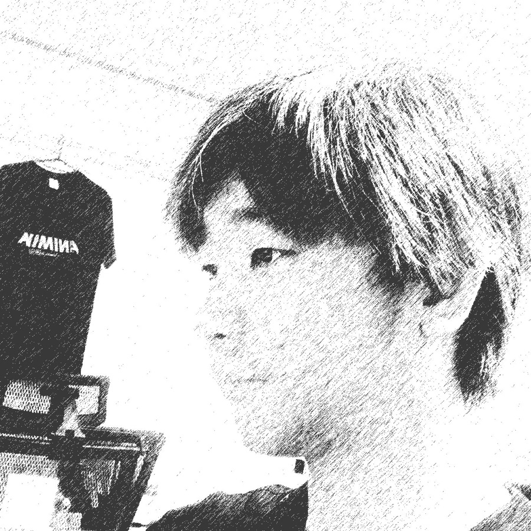
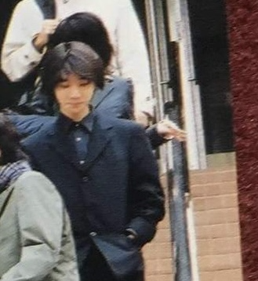
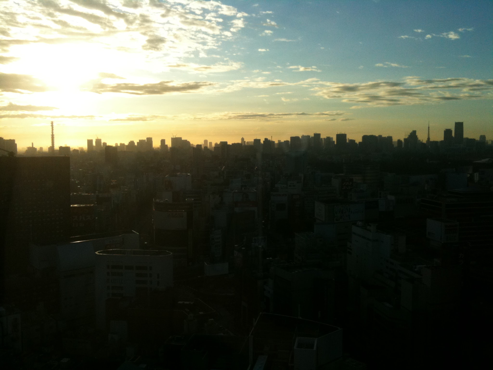
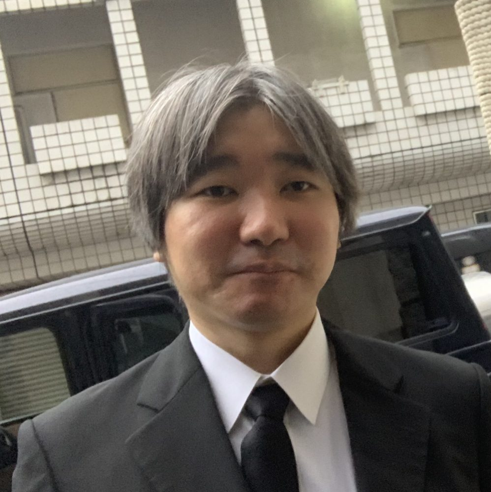
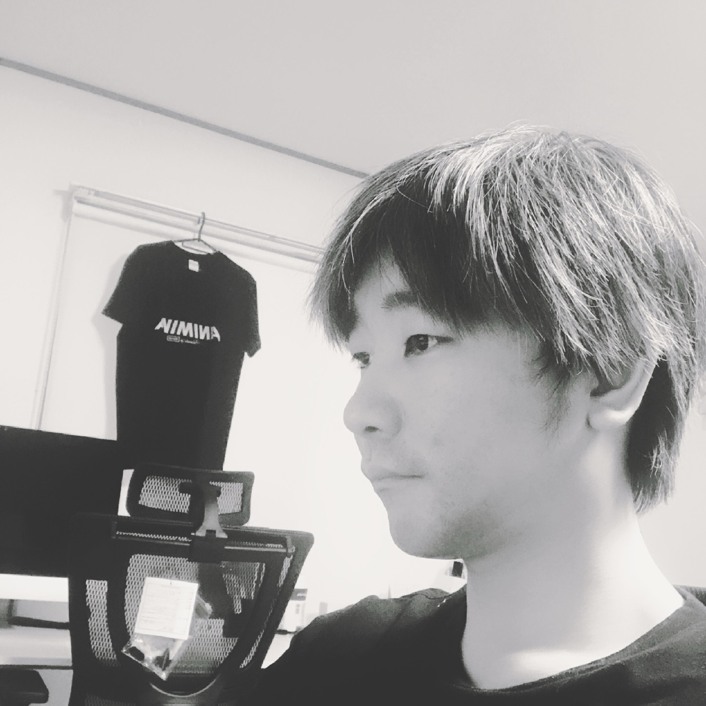
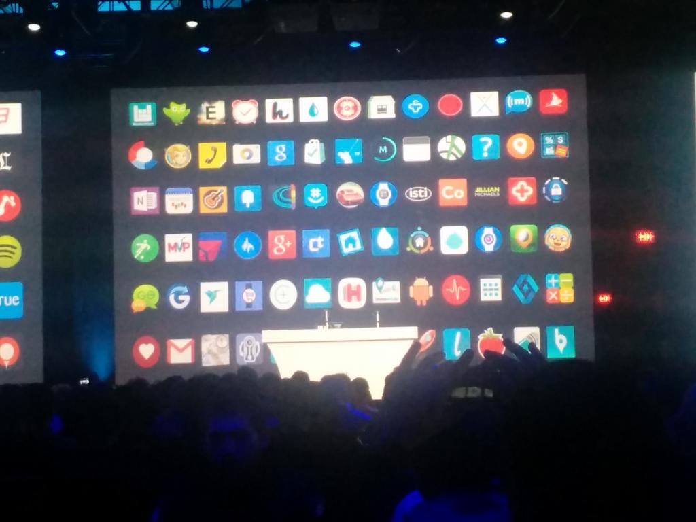

0
始まり
PCとの出会い
十歳、ベスト電器の最上階。Windows 3.1 に出会う夏休み。
関わったどれもが、
その存在無しには生まれなかった。
このシリーズは、どの配信サービスにもありません。再生は、本人から。


上京。一億ユーザーのB2Cへ。
まだ飛鳥さんの目は諦めていない

2016年、LINEを離れ、再び戦場へ。お世話になった電警に合流、個人会社も設立し活動。
明日、閃きます
可能です


2019年、オフィスアスカ設立。現在の中核。
サーバー費用十分の一がリリース条件
「最高のインターネットサービス」と口にできるのは、作り手ではなく使い手である。作り手にできるのは、提供する側と享受する側の均衡を探り続けることだけ。その研究に、終わりはない。
広く人の幸不幸を左右する権限は、現代では経営者に集中している。肩書きは影響を生まない。所有と決定権が生む。技術があればCTOという椅子に収まるのは容易いが、それは選ばない。誰かの社員には戻らない。ただし、対等な所有と責任を分かち合う共同経営には、いつでも応じる。
CPUのキャッシュから主記憶へ、ストレージへ、ネットワークの向こうへ──階層をひとつ跨ぐたび、計算機は千倍遅くなる。人の思考も同じで、検討が複数の脳に分かれた瞬間に速度は失われる。他人の脳を借りるのは、学びまで。決めるのは、いつも一つの脳。
十六歳から、話す相手はいつも社長だった。だから経営者の課題は、経営者の言葉で聞く。相手の業界を、事業を、置かれた部門を学んでから会いに行く。理解が先で、提案は後。自分の能力を一言で言うなら、「分かり手」。
「自分で事業をする」ことにフォーカスし、それに必要なものをすべて学び吸収してきた。その広がりを、経営者としての視点と、事業者としての視点で。
福岡市生まれ、東京・渋谷在住。二〇〇〇年、高校二年でインターネットサービスの立ち上げからキャリアを始める。以来、テクノロジーに限らず、デザイン、マーケティング、経営と、職責も肩書きも鑑みず身に付け、実践してきた。
八つを超える会社をゼロから立ち上げ、二百名の組織を預かり、売上四億七千万円の会社が二十億円になるまでを共に走った。会計も、労務も、セキュリティも、自分の手でやってきた。
扱う領域は、パブリッククラウドの設計から、行き詰まったプロジェクトの収束、事業のゼロイチまで。拠点は東京・渋谷。
aska@office-aska.com
十歳。福岡市のベスト電器、その最上階で開かれた夏休みのパソコン教室。Windows 3.1、一太郎、Lotus 1-2-3。すべてはここから始まる。
高校二年。分譲マンションのパンフレットをスキャンし、検索できる資産に変える。福岡県内五千二十九棟。スキャン工程の段取りを組み替えてスループットを上げ、低単価の受託を、機材・撮影・スキャン込みの付加価値提案へ転換した。
このときから、話す相手はいつも社長だった。
不動産会社の社長たち
メール起因の情報漏えいと内部統制を、統合的に解決する製品。メールサーバ、アーカイブ・監査（送信メールの第三者チェックと証跡保持）、誤送信防止、暗号化の四機能を束ね、競合製品より三割から五割安く。近畿大学工学部・報知新聞社ほか十数システムに導入され、社内表彰を受け、RSA Conference 2009 に出展された。
銀行、電力、ケーブルテレビ──この時代に、電子取締役会へのハードウェアトークン認証の国内先行導入も。
会員一千万を超える認証基盤を、当時流行したリスト型攻撃に耐える設計へ刷新。IPアドレスや失敗回数など、複数の指標を組み合わせたブロッキングを設計した。livedoor Blog の刷新にも携わる。
のちに本物の攻撃を受け、被害を最小限で食い止める。正しいIDとパスワードの初回入力は防げない──その限界も、設計思想に含めて。
一千万人の会員。攻撃者。
友達一千万超への一斉配信から殺到する、同時アクセス。サーバーの数ではなく、負荷そのものの設計で解く。一秒に一回の常時プリレンダリングでキャッシュ未ヒットを消し、MySQLでの在庫制御、非同期処理、高速メモリストレージを束ね、台数を抑えたまま捌き切る。
Twitter クライアント。iOS と Android でリリースし、十万ダウンロード。開発からサポートまで、一人で完結させた。人気アプリ紹介記事にも選出。

LINE の EC 事業の端緒となる、会員限定セール。他部署の上席と二人三脚で、権限の外側から事業を拡張していく。
他部署の上席
セールから総合モールへ。EC事業の拡張。
一千万超の友達を持つ公式アカウントから、全ユーザーへ同時配信。早い者勝ちのセールに、一千万人が同時に押し寄せる。第4話の基盤が真価を発揮する主戦場。高速に在庫を抑え、確実に捌く。
まだ飛鳥さんの目は諦めていない
過密なスケジュールに、QAチームからは「責任が持てない」と延期を求める声が上がっていた。当時 LINE株式会社 執行役員だった島村氏が、定例会議で漏らした一言。統括責任者から託された一筋の期待に応え、ローンチまでこぎ着けた。
執行役員・島村氏。QAチーム。統括責任者。
置き配の活用で、再配達の削減と積載率の改善を実現する、LCC型ラストワンマイル配送。ジョイントベンチャーの立ち上げメンバーとして構築。
参考：locco.co.jp
明日、閃きます
著作権保護サービスの核となるはずだった類似画像検索の技術は、スタンドアロン前提の設計だった。大規模な分散システムには適応できず、そのままでは頓挫するほかない。ゼロから情報を集め直し、独自の分散アーキテクチャの類似画像検索システムを構築。最終判定に元の技術を残す設計で、スケジュール内のリリースと、リサイズ・切り抜きの偽装を含む検知率九十六％を両立させた。
LINE子会社の担当者。コア技術の開発会社。
電警に1人目のエンジニアとして合流し、組織を数十名規模の開発体制に育てる。その後、自らの会社 New Life Plus を設立し、アニメ番組表 ANIMINA や FIRSTWEB など自社サービスを発表する。
可能です
Oracle 等を中心に開発された三つの勘定系基幹システムを、単一のパブリッククラウド（Google Cloud）上に、それも NoSQL へ──野心的な大規模プロジェクトが大炎上しているとのSOSを受けた。単身でベンダーに潜り込み、調査を始める。
失踪するエンジニアが出るほど過酷な現場で、三十〜四十名を率いる筆頭技術者として最難改修を自ら担い、PMからの問いにすべて「可能です」と応え、無事リリースを迎えた。当初は提訴すら噂されたが、最終的には発注元の社長からベンダーの社長へ感謝状が贈られた。この出来事は Google の耳にも入り、以後のアライアンスへと繋がった。
PM。三十〜四十名のエンジニア。発注元の社長。ベンダーの社長。
ファン同士の交流、グッズ購入、ファンクラブ入会、アーティストへのギフトまでをワンストップで備えた、ライブ配信プラットフォームの開発。
人事配置を決定するためのインターネットサービスを開発。大手プロフェッショナルファームのHR領域へ、業務理解を伴う形で踏み込んだ仕事。
イベント整理券・予約管理のSaaSを、創業から月商三千万円規模へ。任天堂、サンリオ、ちいかわ等の強力なIP、丸井等のデパート、大阪万博といったナショナルブランド・上場企業に多数採用。FC会員認証ゲート、Apple/Google Wallet、多言語自動翻訳、静的ページホスティング──生成AIをネイティブに組み込んだ高速開発を、現在も率いる。
サーバー費用十分の一がリリース条件
オフショア開発に失敗し、完成もせず、運用には月百万円超のデータベースコストが掛かると試算された炎上プロジェクト。支援要請を受けて調査を始め、BigQuery と非同期の仕組みを駆使して運用コストを十分の一以下に。一億レコードに耐えるデータ基盤とともに、「これなら黒字運用が可能」と判断され、無事リリースに至った。
LINE のチャットで質問に答えるだけで、AI のアシストによりコーポレートサイトが出来上がる。初期費用なし、月額九八〇円から、最短即日公開。
参考：min.page
Google Workspace 上で、電子帳簿保存法対応（帳票保存）を自動化するアドオン。JIIMA認証を取得した、法令準拠の運用。レベニューシェアで共同提供。
コーヒー生豆のダイレクトトレードを推進するB2Bプラットフォームの開発。長期固定価格による直接取引と、GHG可視化などのサステナビリティ機能。業界のリーディング企業を対象とするプログラムを支える。
実測、十八日間で二一二コミット、三四七のマージPR、五万行。ピークの一日には、十一の独立した開発ストリームが同時に進む。iOS、バックエンド、認証、インフラ、テスト──通常なら十〜二十名の専門家チームが要る並行開発を、一つのセッションで。
顧客のニーズ、技術的最適解、デザイン、運用性を、一つの脳で一気に考える。生成AIは、フィジカル以外のすべてを増幅する。